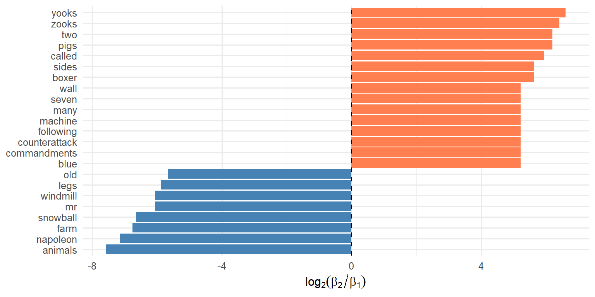

| book | n_paragraphs | n_words |
|---|---|---|
| Animal Farm | 5 | 553 |
| Butter Battle Book | 4 | 172 |
Discovering Latent Themes
We established:
Now we go deeper: How do topic models work?
A topic model makes two key assumptions:
Imagine generating a document:
Step 1: Choose a mixture of topics for this document
Step 2: For each word position:
LDA inverts this process: Given documents, infer the topics.
Can LDA distinguish two very different books?
Animal Farm (George Orwell, 1945)
The Butter Battle Book (Dr. Seuss, 1984)
We use Wikipedia’s plot summaries, treating each paragraph as a “document.”
Our mini-corpus of paragraphs within plot summaries:
| book | n_paragraphs | n_words |
|---|---|---|
| Animal Farm | 5 | 553 |
| Butter Battle Book | 4 | 172 |
# Count words per paragraph (our "documents")
af_bbb_counts <- af_bbb_token_tbl |>
dplyr::mutate(doc_id = paste(src, pdx, sep = "_")) |>
dplyr::count(doc_id, word)
# Convert to document-term matrix
af_bbb_dtm <- af_bbb_counts |>
tidytext::cast_dtm(document = doc_id, term = word, value = n)
af_bbb_dtm<<DocumentTermMatrix (documents: 9, terms: 486)>>
Non-/sparse entries: 598/3776
Sparsity : 86%
Maximal term length: 18
Weighting : term frequency (tf)We asked for 2 topics—matching our 2 source books.
Can LDA recover the distinction?
Figure 1: Top words in each topic (Animal Farm vs Butter Battle)
Topic 1 top words: animals, napoleon, farm, snowball…
→ Animal Farm ✓
Topic 2 top words: yooks, zooks, wall, battle…
→ The Butter Battle Book ✓
LDA successfully separated the two sources—without being told which paragraphs came from which book.
Which words most distinguish the topics?
Figure 2: Log₂ ratio: positive = Topic 2 (Butter Battle), negative = Topic 1 (Animal Farm)
Let’s see what happens at scale.
2,246 news articles from the Associated Press.
In Chapter 10 we fit \(K = 2\) topics and found:
Now: What if we ask for \(K = 4\) topics?
Figure 3: Top words in each of 4 topics (AP articles)
| Topic | Top Words | Interpretation |
|---|---|---|
| 1 | percent, million, market, stock | Business/Finance |
| 2 | president, government, party | Politics (Domestic) |
| 3 | soviet, united, states, military | International/Cold War |
| 4 | police, people, city, reported | Local News/Crime |
These interpretations require domain knowledge. The algorithm provides the word distributions; you provide the labels.
Each document has a mixture of topics:
| Doc ID | Topic 1 | Topic 2 | Topic 3 | Topic 4 |
|---|---|---|---|---|
| 195 | 0.53 | 0.16 | 0.14 | 0.18 |
| 526 | 0.18 | 0.44 | 0.15 | 0.23 |
| 1842 | 0.12 | 0.62 | 0.13 | 0.13 |
| 2227 | 0.10 | 0.09 | 0.72 | 0.09 |
Most documents lean toward one topic, but more even mixtures are common.
Figure 4: Distribution of dominant topic proportions
A few articles are dominated by one topic \((\gamma > 0.8)\), but most articles are a mixture of two or more topics.
LDA needs a probability distribution over mixtures.
The Dirichlet distribution is a distribution over such probability vectors.
Samples from Dirichlet distributions with different concentrations
The Dirichlet has a concentration parameter \(\alpha\):
Small \(\alpha\) (< 1): Sparse mixtures
Large \(\alpha\) (> 1): Uniform mixtures
LDA typically uses small \(\alpha\), reflecting the intuition that documents are usually about something specific.
LDA uses two Dirichlet distributions:
These are hyperparameters you can tune—but defaults often work well.
How many topics should you request?
This is analogous to choosing \(K\) in K-means clustering.
Too few topics: Themes are too broad
Too many topics: Themes are too narrow
Unlike clustering, there’s no “elbow” method that works reliably.
Practical approaches:
K = 2: i, people, two, president, government
K = 4: Splits into Business, Politics, International, Local
K = 8: Further splits may reveal Sports, Legal, Technology…
…or may produce redundant, uninterpretable topics.
Practical Recommendations
| Symbol | Meaning |
|---|---|
| \(K\) | Number of topics (you choose) |
| \(\alpha\) | Dirichlet concentration of topic mixtures per doc |
| \(\beta_{k,v}\) | Probability of term \(v\) in topic \(k\) |
| \(\gamma_{d,k}\) | Proportion of topic \(k\) in document \(d\) |
For each topic \(k\): \(\sum_v \beta_{k,v} = 1\)
For each document \(d\): \(\sum_k \gamma_{d,k} = 1\)
| Earlier Concept | Topic Model Analog |
|---|---|
| K-means clustering | LDA (documents → topics) |
| Cluster centroids | Word mixtures (β) per topic |
| Cluster assignments | Topic mixtures (γ) per document |
| Choosing K | Choosing K |
| PCA loadings | Word weights per topic |
Topic models are “soft clustering” — documents belong partially to multiple topics.
Two Different Techniques
Linear Discriminant Analysis (Chapter 9)
Latent Dirichlet Allocation (Chapter 11)
Both “allocate” observations to categories—but with very different goals.
Using the AP News K = 4 results:
For a document with \(\gamma = (0.4, 0.3, 0.2, 0.1)\):
You have a corpus of 5,000 customer support tickets.
For theme discovery in a large corpus:
Foundational:
Blei, Ng, & Jordan (2003). Latent Dirichlet Allocation. JMLR.
Steyvers & Griffiths (2007). Probabilistic Topic Models. In Handbook of Latent Semantic Analysis.
Practical:
Silge & Robinson. Text Mining with R, Chapter 6.
Antoniak (2023). LDA in Practice. Blog post with practical advice.
| Function | Package | Purpose |
|---|---|---|
LDA() |
topicmodels | Fit LDA model |
tidy() |
tidytext | Extract β or γ matrices |
cast_dtm() |
tidytext | Create document-term matrix |
perplexity() |
topicmodels | Model fit metric |